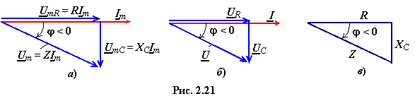

Построим ВД в соответствии с уравнением (2.42). Начнём построение с вектора амплитуды тока Im, который откладываем, как и вектор амплитуды напряжения UmR, вдоль оси 0х (рис. 2.21а). Вектор UmС отстаёт от вектора амплитуды тока
Im по фазе на угол π/2, а вектор амплитуды входного напряжения

Из векторной диаграммы следует, что ток i(t) в RC-цепи опережает приложенное к цепи напряжение u(t) по фазе на угол φ. Векторная диаграмма для действующих значений
напряжений и тока представлена на рис. 2.21б.
Из треугольника напряжений (рис. 2.21а) имеем
'
откуда амплитуда и действующее значение искомого тока
I = , (2.45)
где – полное сопротивление RC-цепи. (2.46)
Из треугольника сопротивлений (рис. 2.21в) RC-цепи определим угол сдвига фаз
φ ,
(2.47)
откуда следует, что значение ёмкостного сопротивления XC в
формулах расчёта токов в ветвях цепей нужно подставлять со знаком минус.